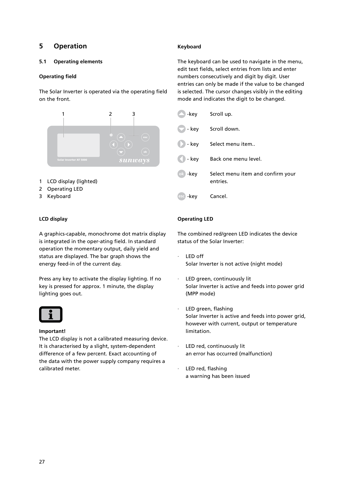

Read the passage.
Source-checked quotations and precise locations let your team inspect what each reference actually says.
Prior art · Patent defense
Engineer-led prior-art searches across patents, technical literature and original-language sources. Every mapping comes with the passage, the pinpoint and the remaining questions.
Source-checked quotations and precise locations let your team inspect what each reference actually says.
Publication evidence and labelled original-language material sit alongside the mapping.
Partial coverage, competing readings and unresolved limitations remain visible in the delivered work.
Inside a submitted claim chart
CyboEnergy · US 9,331,488 B2
Claim 16 · Ground 2
Select a limitation to inspect the original reference page and its highlighted evidence.
Limitation 16c2 · C 50 · Weakest
The manual describes continued grid feeding with a current, output or temperature limitation. Its separate red-flashing state states a warning, but does not say whether feeding continues.
Passages on the original page
LED green, flashing Solar Inverter is active and feeds into power grid, however with current, output or temperature limitation.
LED red, flashing a warning has been issued
R4 · Sunways Solar Inverter AT · Printed p. 27
What the score reflects
This mapping depends on treating the operating limitation as a warning, the manual’s date evidence, and the reason to combine references. That uncertainty remains visible.
Sunways AT manual · §5.1 · Printed p. 27
Original reference · R4
User Manual · AT 5000 / 4500 / 3600 / 2700 · English 07/09

The page image could not load. Open the original PDF below to inspect the reference.
Archived 25 May 2010 from the manufacturer’s website.
Original document page. Highlights identify the quoted passages.
Recorded assessment: 15 October 2026. Scores assess the evidence for this ground; they are not probabilities of invalidity. P2 is the reason to combine, a claim-wide point.
Research engagements
Investigate the claim set across patents, technical publications, standards and original-language sources.
Organize charts, source materials and date evidence for counsel’s reexamination or IPR preparation.
Extend an existing search into non-English documents, standards, implementation history or neighboring disciplines.
Fixed-fee engagements. Scope, fee and delivery date agreed in writing before work begins.
Selected submissions
Power electronics
Aggregate current and voltage sensing, with local controllers for individual inverters.
Read the research exampleNetworking
Tenant isolation, shared physical resources and virtual port statistics.
Read the research exampleCommunications
Frame order, scrambler bits and a CRC carried in the service field.
Read the research exampleStart with the technical question
Tell us the patent, claims of interest and timing. We will confirm the scope, fixed fee and delivery date before work begins.